19:00
Το προηγούμενο βράδυ
Βάλε την εξόρμηση στο Ημερολόγιο Ψαρέματος και δες τις Προβλέψεις Καιρού για το σημείο: ώρα με την ώρα, με παλίρροιες, ήλιο και σελήνη. Στις 19:00 μια υπενθύμιση σου φέρνει την πρόγνωση.
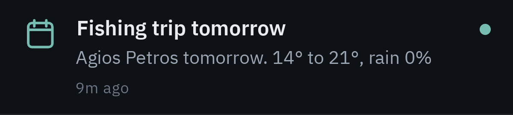
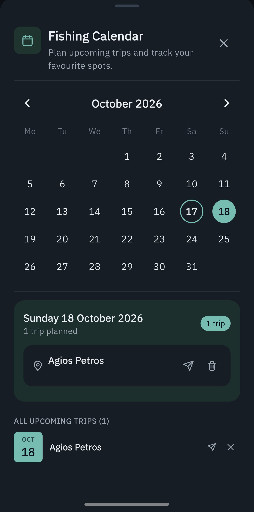
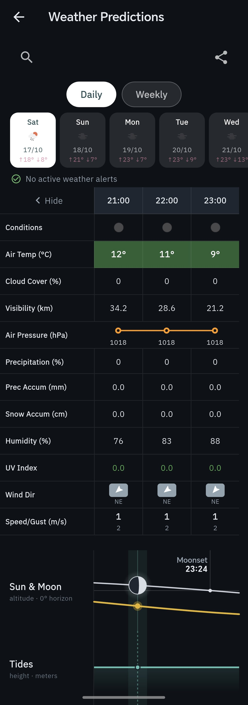
07:00
Μέρα εξόρμησης
Μια σύντομη υπενθύμιση στις 07:00 το πρωί της εξόρμησης. Οι Ειδοποιήσεις Σεληνιακής Φάσης σε ενημερώνουν και για πανσέληνο και νέα σελήνη.
Στον δρόμο
Ακολούθησε τη διαδρομή
Κατέγραψε τη διαδρομή μέχρι ένα νέο σημείο. Η καταγραφή συνεχίζεται ακόμη και με σβηστή την οθόνη και λειτουργεί εντελώς εκτός σύνδεσης, χωρίς σήμα. Αποθήκευσε τη διαδρομή στο σημείο. Την επόμενη φορά ακολούθησέ την: βλέπεις πόσα μέτρα απομένουν και, αν βγεις από τη διαδρομή, το κινητό σε ειδοποιεί με δόνηση.
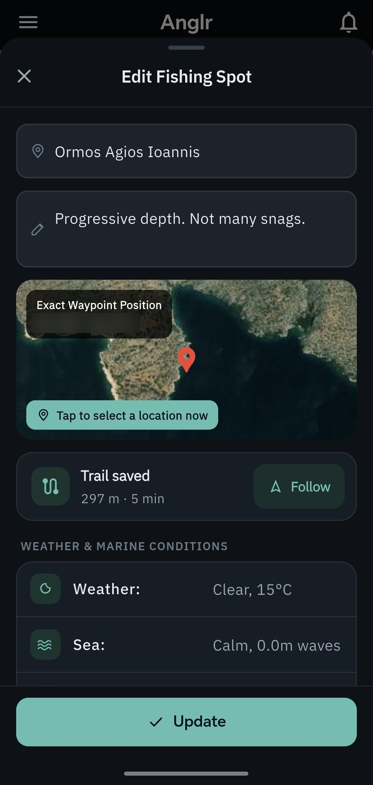
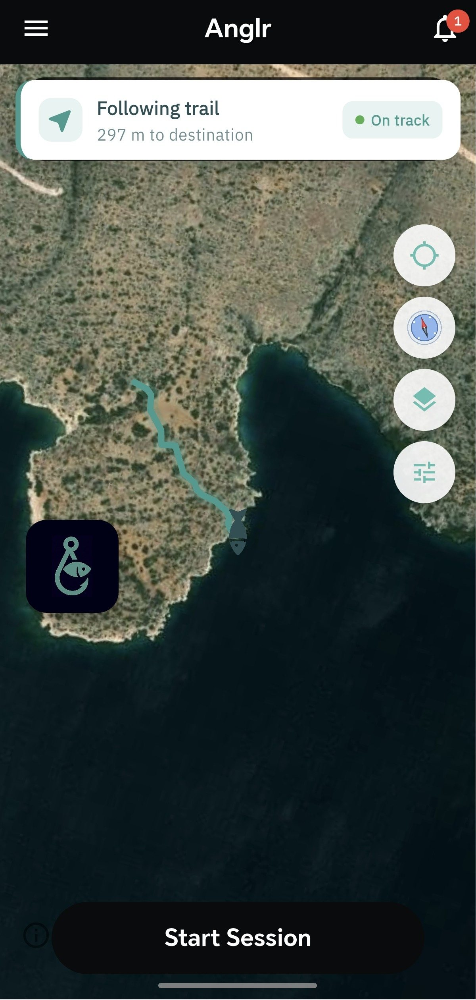
08:56
Στο σημείο
Αποθήκευσε το σημείο με βάθος, βυθό και δομή. Καιρός, θάλασσα και σελήνη μπαίνουν μόνα τους. Μετά, Έναρξη Ψαρέματος.
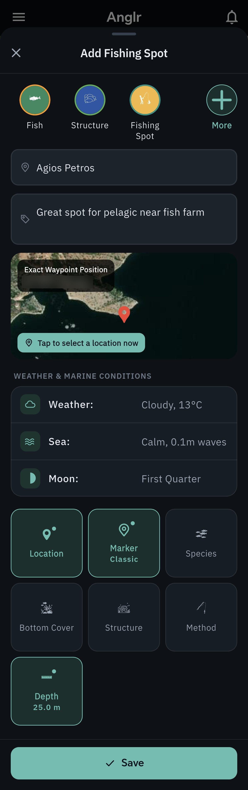
10:37
Πρώτη ψαριά
Κατέγραψε την ψαριά ανά είδος ή κάνε Σάρωση Ψαριού για αυτόματη αναγνώριση με AI. Η φωτογραφία δεν αποθηκεύεται ποτέ.
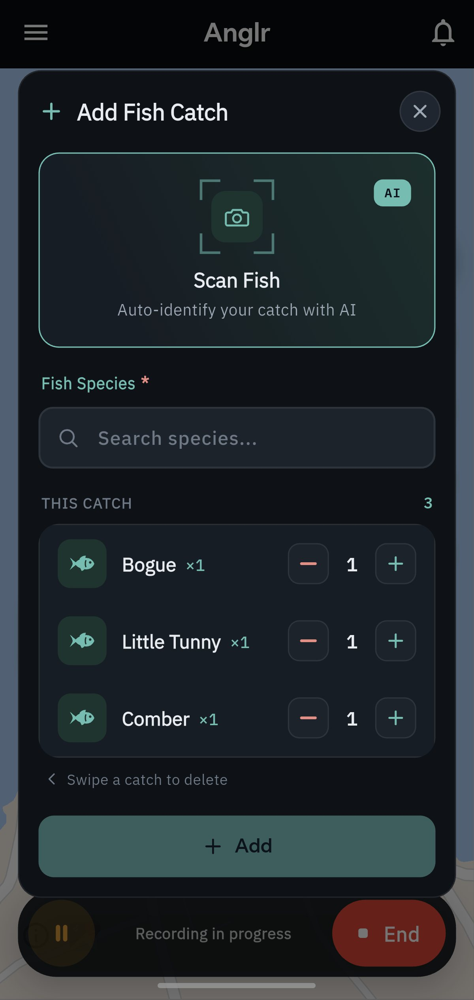
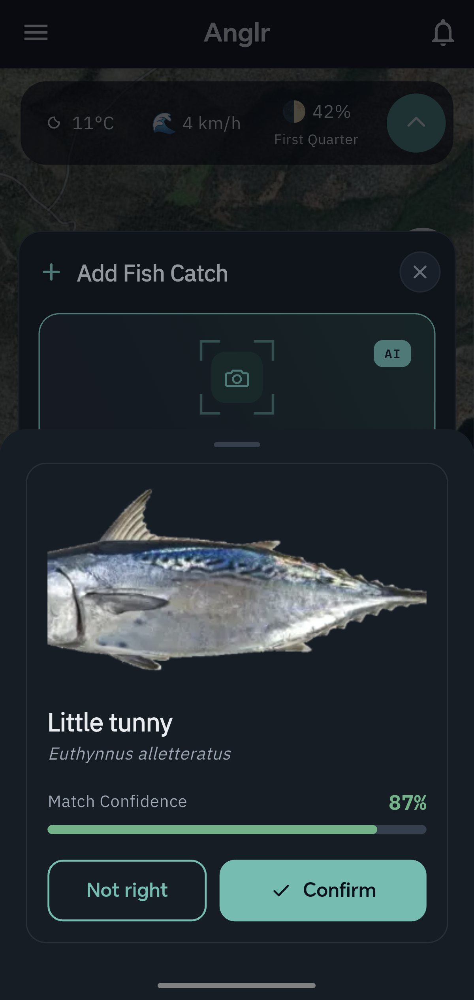
10:55
Τερματισμός ψαρέματος
Οι Λεπτομέρειες Ψαρέματος κρατούν τα σημεία της ημέρας: κάθε ψαριά με την ώρα της, μαζί με άνεμο, κύμα, φούσκωμα, σελήνη και θερμοκρασία θάλασσας.
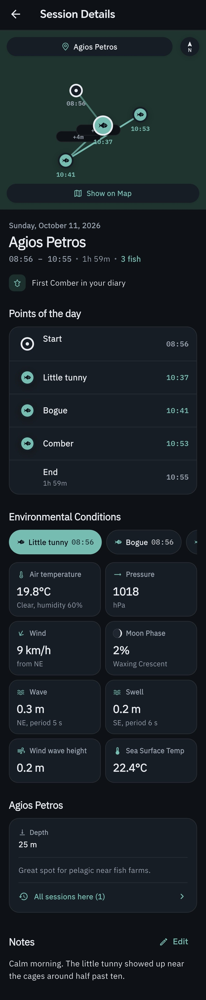
Πίσω στο σπίτι
Τι λέει το ιστορικό σου
Τα Στατιστικά & οι Αναλύσεις μετατρέπουν τις δικές σου ψαριές σε απαντήσεις: τη μηνιαία τάση, τα κορυφαία είδη και τα καλύτερα σημεία, τις συνθήκες και την ώρα της ημέρας που αποδίδουν, τις εποχές, τα ρεκόρ και τα σερί σου. Όσο περισσότερες εξορμήσεις καταγράφεις, τόσο περισσότερα έχει να σου πει το ιστορικό σου.
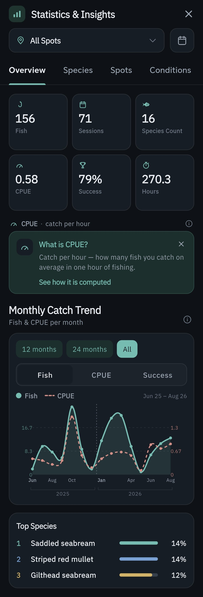
Στην εφαρμογή, CPUE σημαίνει ψαριές ανά ώρα.
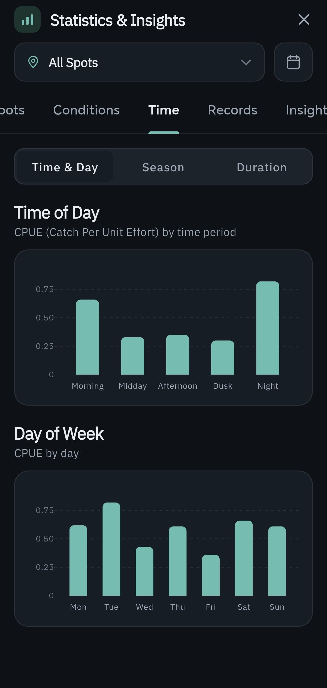
Επίσης στο Anglr
- Ο εξοπλισμός μου: καλάμια, μηχανισμοί, τεχνητά & πετονιές.
- Λειτουργεί χωρίς σύνδεση: το ημερολόγιό σου ζει στο κινητό σου και όσα κατέγραψες ανοίγουν και χωρίς σήμα.
- Χάρτης χωρίς σήμα: οι περιοχές του χάρτη που έχεις ήδη δει ανοίγουν ξανά και χωρίς σύνδεση.
- Απόρρητο: οι φωτογραφίες ψαριών δεν αποθηκεύονται ποτέ και μπορείς να διαγράψεις τον λογαριασμό σου μέσα από την εφαρμογή.
- Ελληνικά και αγγλικά: η εφαρμογή μιλά και τις δύο γλώσσες.